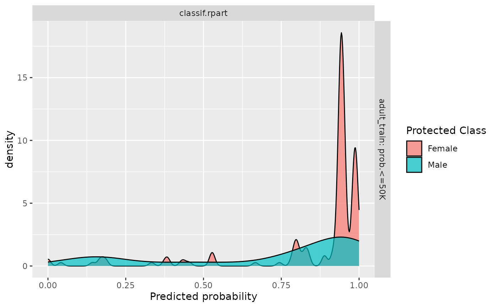

Visualizes per-subgroup densities across learners, task and class. The plot is a combination of boxplot and violin plot. The y-axis shows the levels in protected columns. And the x-axis shows the predicted probability. The title for the plot will demonstrate which class for predicted probability.
Arguments
- object
(PredictionClassif | ResampleResult | BenchmarkResult)
The binary class prediction object that will be evaluated. If PredictionClassif, a Task is required.- ...
The arguments to be passed to methods, such as:
task(TaskClassif)
The data task that contains the protected column.typecharacter
The plot type. Eitherviolinordensity.
Examples
library(mlr3learners)
task = tsk("adult_train")$filter(1:500)
learner = lrn("classif.rpart", predict_type = "prob", cp = 0.001)
learner$train(task)
# For prediction
predictions = learner$predict(task)
fairness_prediction_density(predictions, task)
# For resampling
rr = resample(task, learner, rsmp("cv"))
fairness_prediction_density(rr)
